| |
|
.dgn DOSYALARINI İÇE AKTARMA
|
Genel Bilgiler .dgn formatındaki dosyaların içe aktarımı, Dosya → İçe Aktar → DGN seçeneği aracılığıyla yapılır. Uygulama, hem sürüm 7 hem de sürüm 8'deki dosyaları içe aktarmaya izin verir. 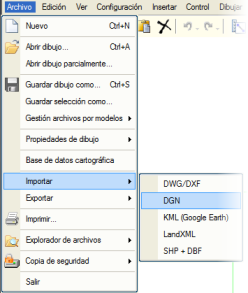
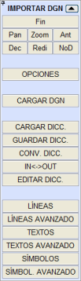Bu seçenek seçildikten sonra, bir veya daha fazla .dgn formatındaki dosyayı içe aktarırken gereken her şeyi yönetmeyi sağlayan menü görüntülenir. [BİTİR] düğmesi, içe aktarmayı sonlandırmak için kullanılır ve üzerine tıklandığında menü kapanır. [Pan], [Yakınlaş], [Önceki], [Detaylı], [Yeniden Çiz] ve [Basit] düğmeleri, ISTRAM®/ISPOL®'ün diğer menülerindekiyle aynı işlevselliğe sahiptir. [SEÇENEKLER] düğmesine tıklandığında, içe aktarılmak istenen .dgn dosyalarını işlerken temel ayarları gösteren bir yüzer menü açılır. 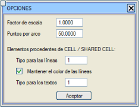
Bu ayarlar şunlardır:
DGN – EDM Dönüşüm İlişkilerinin Tanımlanması Dosyaların dönüşüm süreci bittiğinde, yani çizim ekranda göründüğünde, geriye kalan tek adım, içe aktarma sonrası oluşturulan yeni objeleri kişiselleştirmektir. Bu, her objeyi (çizgiler, semboller ve yazılar) manuel olarak değiştirerek veya önceden oluşturulmuş bir sözlük aracılığıyla otomatik olarak yapılabilir. İçe aktarma menüsü aktifken, program fare imlecinin üzerinde bulunduğu çizgiyle aynı seviyedeki tüm çizgileri vurgular. 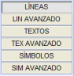Çizgileri, metinleri ve sembolleri manuel olarak dönüştürmek için iki seçenek vardır: sırasıyla çizgiler, semboller ve metin dosyalarında bulunan tüm eleman kombinasyonlarını gösteren bir temel seçim diyaloğu aracılığıyla veya karmaşık eleman kombinasyonlarıyla dönüşümler yapmayı sağlayan bir gelişmiş seçim diyaloğu aracılığıyla. Temel seçim diyaloğu aracılığıyla çizgileri manuel olarak dönüştürmek için [ÇİZGİLER] düğmesine basılır, ardından aşağıda gösterilen gibi bir yüzer menü belirir: 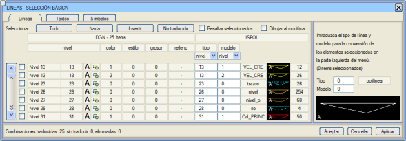
Her veri satırı bir DGN kombinasyonuna (seviye, renk, stil, kalınlık, dolgu gibi DGN özellikleri'nden oluşur) ve buna karşılık gelen EDM hedefine (tip ve model) karşılık gelir. Son bir sütun, her kombinasyonda bulunan DGN nesnelerinin sayısını gösterir. Varsayılan olarak, her DGN kombinasyonuna EDM tipi olarak seviye ve EDM modeli olarak renk atanır. Seviye sütunu, .dgn'de mevcut her seviyenin seviye adını ve numarasını gösterir. Eğer ad uzunluğu nedeniyle eksik gösteriliyorsa, tam adı içeren bir ipucu görünmesi için fare imlecini üzerinde bekletmek yeterlidir. Bir satıra tıklandığında, DGN kombinasyonu (seviye, renk, stil, kalınlık ve dolgu) dosyada bulunanlar arasından seçili olarak görünür. Eğer birden fazla satıra tıklanırsa, tüm DGN kombinasyonları diyalogda seçili olarak görünecektir. Ayrıca her DGN kombinasyonunun (seviye, renk, stil, genişlik ve dolgu) solundaki kutucuğu işaretleyerek de satırlar seçilebilir. Diğer seçim seçenekleri şunlardır:
ISTRAM®/ISPOL® çizgi tiplerini ve modellerini bu iletişim kutusu aracılığıyla dosya dönüşümü sırasında oluşturulan çizgilere atamak için iki olası yol vardır:
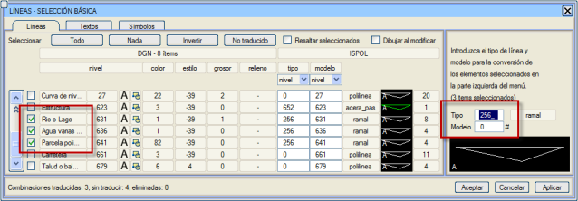
Her durumda, eğer belirlenen ilişkilerden memnun değilseniz, [İptal] düğmesine basarak önceki dönüşüm verilerini geri alabilirsiniz. Dönüşüm ilişkileri belirlendikten sonra [Tamam] düğmesine tıklanır ve değişiklikler kaydedilirken iletişim kutusu kapanır. Diyalogdan çıkmak istemiyorsanız, [Uygula] düğmesine basarak yapılan değişikliklerin kaybolma riski kalmaz ve diyalog gösterilmeye devam eder.  tip ve model alanlarının altındaki açılır menüler, seviye, renk, stil, kalınlık ve 0 seçenekleriyle, seçilen elemanlara otomatik olarak dönüşüm değerleri atamayı sağlar. tip ve model alanlarının altındaki açılır menüler, seviye, renk, stil, kalınlık ve 0 seçenekleriyle, seçilen elemanlara otomatik olarak dönüşüm değerleri atamayı sağlar.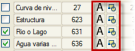Her seviyenin sağında görünen düğmeler, eğer varsa, aynı seviyeye sahip objeler için bu diyalog ile etiket ve sembol temel seçim diyalogları arasında geçiş yapmak için kullanılır. Hem [Yazılar] sekmesinde hem de [Semboller] sekmesinde benzer düğmeler bulunur. Daha karmaşık eleman kombinasyonlarından bir dönüşüm gerçekleştirmek için, [ÇİZGİLER GELİŞMİŞ] düğmesine veya metinler ve semboller için benzerlerine basılarak erişilebilen başka bir yüzer menü bulunmaktadır: 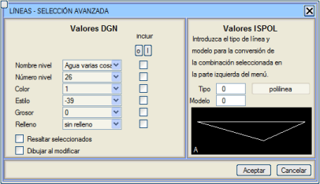
Bu durumda diyaloğun işlevselliği şöyledir:
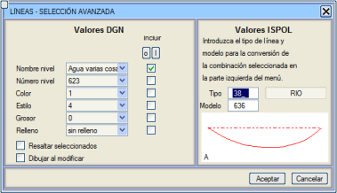
Sembollerin ve metinlerin dönüştürülmesi için izlenecek süreç, çizgiler için kullanılanla aynıdır, ancak bu durumlarda düğmeler [METİNLER], [METİNLER GELİŞMİŞ], [SEMBOLLER] ve [SEMBOLLER GELİŞMİŞ]'dir ve semboller durumunda, ek bir kutucuk DGN hücrelerini patlatma seçeneği sunar (bu özellik sadece .dgn sürüm 8 dosyaları için mevcuttur). Sözlükler Bir sözlük, temel olarak her DGN kombinasyonunun ve buna karşılık gelen EDM dönüşümünün sütunlu bilgilerini saklayan .cod uzantılı bir ASCII dosyasıdır, bu da içe aktarma sürecini otomatikleştirmeyi sağlar. Bir ASCII dosyası olduğu için, dosyanın sözdizimine titizlikle uyulduğu sürece herhangi bir metin düzenleyiciyle manuel olarak oluşturmak ve düzenlemek mümkündür. Aslında, programın kendisinden oluşturulan sözlükler, dosyanın başlığına her bir sütunun açıklayıcı bir şekilde bir dizi yorum ekler. [SÖZLÜĞÜ DÜZENLE] düğmesi, sözlükleri not defteri ile açmaya yarar. Her durumda, bir dönüşüm sözlüğü oluşturmanın en hızlı yolu, içe aktarma kutusunda farklı DGN kombinasyonlarının EDM atamaları belirlendikten sonra programın kendisinden yapmaktır. Bunun için, [SÖZLÜĞÜ KAYDET] düğmesine basmak yeterlidir, ardından kaydedilecek sözlük sürümünü seçmeniz gereken bir iletişim kutusu belirir: 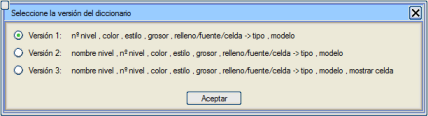
Sunulan olanaklar şunlardır:
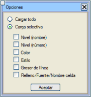Sözlük dosyası elde edildikten sonra, gelecekteki içe aktarmalarda kullanımı dönüşüm sürecini büyük ölçüde otomatikleştirir. Yüklemek için [SÖZLÜĞÜ YÜKLE] düğmesine basılır ve yüklenmek istenen sözlüğün adı seçilir. Düğmeye basıldıktan sonra, sözlükte bulunan tüm kombinasyonların mı yükleneceği yoksa her DGN kombinasyonunun yalnızca belirli özelliklerinin mi dikkate alınacağı belirtilmesi gereken bir iletişim kutusu gösterilir. Örneğin, seçici yükleme belirtilir ve Seviye (numara) ile Renk işaretlenirse, program sözlükte belirtilen aynı EDM hedefini, bu özellikleri ortak olan kutudaki tüm DGN kombinasyonlarına atayacaktır. [GİRİŞ<->ÇIKIŞ] düğmesi, hem DGN içe aktarma hem de dışa aktarma için geçerli bir seçeneğe karşılık gelir. Bu düğmeye basıldığında, bir dosya seçici aracılığıyla mevcut bir sözlüğü seçmeniz istenir ve ardından aşağıdaki bilgilerin kaydedileceği ikinci bir dosya seçmeniz istenir:
Eski sözlükleri içe aktarma Açıklanandan farklı bir formata sahip ve programın eski sürümlerine karşılık gelen başka bir dönüşüm sözlüğünden sözlük elde etmek mümkündür. Bunun için [SÖZLÜĞÜ DÖNÜŞTÜR] seçeneği kullanılır, ardından dosya seçici aracılığıyla dönüştürülmek istenen dosya ve hedef dosya sırasıyla seçilmelidir. |